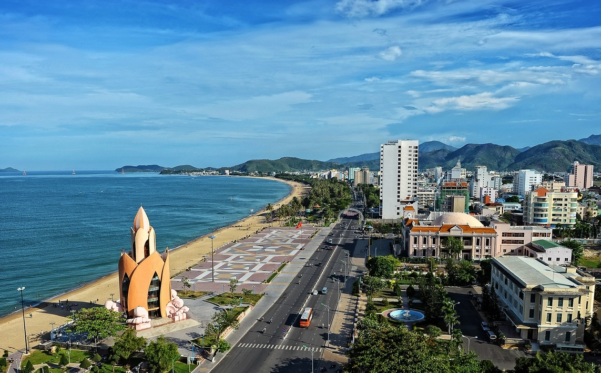
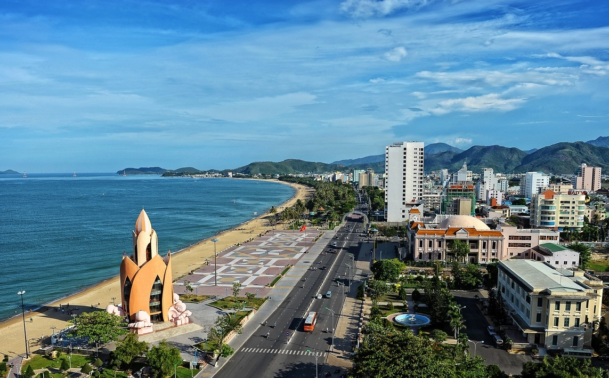
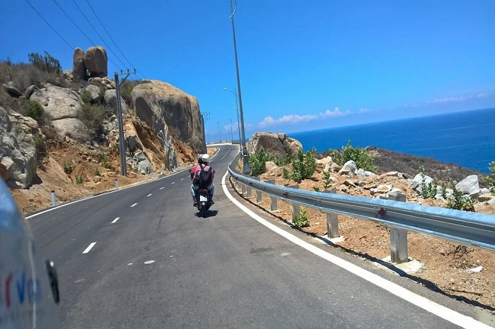

Giới thiệu đôi nét về tỉnh Khánh Hòa
Khi nhắc đến tỉnh Khánh Hòa mọi người đều nghĩ đến 1 thành phố biển sôi động với những bãi biển xinh đẹp và quyến rũ như bãi biển Nha Trang, một trong những địa điểm du lịch nổi tiếng nhất nước.
Khi nhắc đến tỉnh Khánh Hòa mọi người đều nghĩ đến 1 thành phố biển sôi động với những bãi biển xinh đẹp và quyến rũ như bãi biển Nha Trang, một trong những địa điểm du lịch nổi tiếng nhất nước.
Khánh Hòa là một tỉnh duyên hải Nam Trung Bộ Việt Nam, giáp với tỉnh Phú Yên về hướng Bắc, tỉnh Đắk Lắk về hướng Tây Bắc, tỉnh Lâm Đồng về hướng Tây Nam, tỉnh Ninh Thuận về hướng Nam và Biển Đông.
Khí hậu của Khánh Hòa được biết đến với đặc trưng nhiệt đới gió mùa, mang lại cho tỉnh này một thời tiết khá ôn hòa và dễ chịu. Nhiệt độ trung bình hàng năm ở đây là khoảng 26°C, tạo điều kiện lý tưởng cho du lịch quanh năm. Lượng mưa trung bình hàng năm ở Khánh Hòa vào khoảng 2000 mm, phân bố không đều qua các mùa. Mùa mưa thường bắt đầu từ tháng 9 và kéo dài đến tháng 12, trong khi mùa khô chiếm phần còn lại của năm. Điều này làm cho Khánh Hòa trở thành một điểm đến lý tưởng, với ít hiện tượng thời tiết cực đoan như bão so với các tỉnh khác ở Duyên Hải miền Trung.Xem Thêm
Ở Khánh Hòa, phương tiện di chuyển đặc trưng phản ánh sự đa dạng và phát triển của tỉnh này trong lĩnh vực du lịch. Du khách có thể dễ dàng đến Khánh Hòa bằng máy bay với sân bay Cam Ranh, hoặc bằng tàu hỏa qua tuyến đường sắt Bắc Nam. Đối với việc di chuyển nội bộ, xe máy là lựa chọn phổ biến cho những ai muốn khám phá tự do, trong khi taxi và xe buýt cung cấp sự tiện lợi và thoải mái cho các chuyến đi ngắn
Đặc biệt, việc thuê xe máy là một trải nghiệm trọn vẹn vẻ đẹp và sự sôi động của Khánh Hòa từ những con đường mộc mạc những bãi biển nổi tiếng
Ẩm thực Khánh Hòa là sự pha trộn tinh tế giữa hương vị biển cả và nét đặc trưng của vùng đất nhiệt đới. Những đặc sản của vùng. Mỗi món ăn ở Khánh Hòa đều mang một câu chuyện văn hóa và lịch sử, làm phong phú thêm trải nghiệm ẩm thực cho bất kỳ ai ghé thăm.
Tỉnh Khánh Hòa, với bờ biển dài và phong cảnh đẹp, là điểm đến lý tưởng cho du khách muốn khám phá văn hóa độc đáo và cuộc sống sinh động của người dân địa phương. Với lịch sử và di sản văn hóa phong phú, tỉnh này là nơi phát triển nhiều nghề truyền thống như làm thủ công, nghệ thuật dân gian và ẩm thực đặc trưng. Cộng đồng ở Khánh Hòa thường tổ chức các lễ hội, festival và sự kiện văn hóa hàng năm để tôn vinh các giá trị truyền thống và tạo điều kiện cho du khách khám phá sâu hơn về văn hóa địa phương. Cuộc sống ở Khánh Hòa cũng thể hiện sự kết hợp hài hòa giữa lối sống truyền thống và tiện ích hiện đại, tạo nên một môi trường sống đa dạng và phong phú.